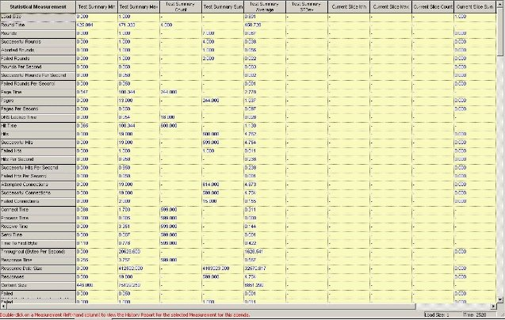
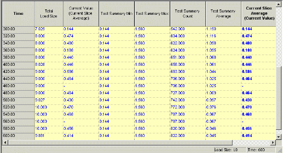

WebLOAD Statistics Reports
The Statistics Report is both a real-time monitor that displays the results of your test while you run it and a report that you can save and export.
WebLOAD Console collects approximately 30 different statistics during a test. The Statistics Report displays the values for all of them. You can also create Integrated Reports that display only the statistics that you choose. For information about Integrated Reports, see WebLOAD Console Performance Reports (on page 295).
Statistical Measurements and Their Values
The Statistics Report is presented as a table.
Row headings (the labels in the first column on the left) are the names of the statistical measurements.
Column headings categorize the statistics as follows:
- Total ‒ Sums the values for each statistic across all the scripts running during the test.
- ScriptName::Total ‒ Sums the values for each statistic across all instances of the specified script running during the test.
- ScriptName@LoadGenerator ‒ Sums the values for each statistic across all instances of the specified script running under the specified Load Generator during the test.

The statistics displayed in each row are grouped into the following categories:
- Per time unit statistics are ratios that calculate an average value for an action or process. For example: Hits Per Second and Rounds Per Second.
- Timers track the amount of time it took the Virtual Clients to complete an action or process and are only measured for successful transactions. For example: Connect Time and Round Time.
- Counters track the number of times the Virtual Clients completed an action or process. For example: Hits and Rounds.
By default, WebLOAD Console displays values for its statistics at 20-second intervals. The reported value at each reporting interval is called the current value.
Changing the Length of the Reporting Interval
To change the length of the reporting interval:
- Click Global Options in the Tools tab of the ribbon,
-Or-
Select Global Options from the Console System button.
- Select the General tab.
- Change the value in the Statistics reporting resolution field to any number of seconds between 1 and 3,600.
Current Value Computation
WebLOAD Console calculates the current value as follows:
- For per time unit and timer statistics, WebLOAD Console averages the values collected during the last reporting interval (current slice). If the reporting interval is 20 seconds (the default), the value for Hits Per Second is the average number of hits per second over the last 20 seconds. The value for Hit Time is the average time it took for a successful hit to be completed during the last 20 seconds.
- For counters, WebLOAD Console reports the number of times the item being counted occurred over the last reporting interval. If the reporting interval is 20 seconds, the value for Hits is the actual number of hits that occurred during the last 20 seconds.
Statistics Definitions
The following list displays the various statistics, by context. Table 46 displays the definitions of the per time unit, timer, and counter statistics, alphabetically.
- Load Size
- Throughput (bytes per second)
- Page statistics – A page is an upper level request for information made by a Virtual Client to the system under test (SUT). For example, a Get statement for a URL retrieves a page. Page statistics include:
- Pages
- Pages Per Second
- Page Time
- Hit statistics – A hit is a request for information made by a Virtual Client to the system under test (SUT). In other words, an HTTP request. For example, a Get statement for a URL retrieves a page. The page can include any number of graphics and content files. Each request for a gif, jpeg, html file, etc., is a single hit. Hit statistics include:
- Hits
-
Rounds statistics – A Round is an entire run of a script. Rounds statistics include:
- Rounds
- Successful Rounds
- Failed Rounds
- Aborted Rounds
- Rounds Per Second
- Successful Rounds Per Second
- Failed Rounds Per Second
- Round Time
- Connection statistics – A Connection is a new TCP/IP connection of a Virtual Client to the SUT. The Connection counter increments every time a TCP/IP connection is opened. This number is always less than or equal to hits/requests, because several hits may use the same HTTP connection if the Persistent Connection option is enabled (Default Options Browser Parameters). Connection statistics include:
- Attempted Connections
- Successful Connections
- Failed Connections
- Connect Time
- Connection Speed (Bits Per Second)
- DNS Lookup Time
- Response statistics – A Response is an HTTP message sent from the Web server as a response to an HTTP Request. Response statistics include:
- Responses
- Response Data Size
- Response Time
- Send Time
- Process Time
- Receive Time
- Content Size
- Report statistics – The statistics collected by the reportStatistics command in a Selenium script. Refer to the Navigation Timing Statistics table in the Selenium Integration appendix of the WebLOAD™ Recorder User’s Guide.
statistics: - Automatic Data Collection
- Timer
- Counters
- Transaction Timers
- Total
TPS - Transaction Counters
- Java andActiveX Timers
- Java and ActiveX Counters
- Server Performance Measurements
Statistics for Virtual Clients and Probing Clients
There are differences in the statistics reported for Virtual Clients and Probing Clients:
- The values reported for Virtual Clients are average values based on the data reported by the total number of Virtual Clients running that script.
- The values reported for a Probing Client are the specific values for that single, representative user.
By default, Virtual Clients are single-threaded so the Load Machines can support more Virtual Clients overall. Probing Clients run with four threads in order to emulate a single user as closely as possible.
Therefore, you should use the statistics that you obtain from the different types of emulated users in different ways. For example, if you are interested in the exact experience of a typical user of your site, examine the timers like Round Time, Hit Time, Connect Time, and so on from a Probing Client. For performance or load issues, however, examine statistics (such as Successful and Failed hits, Successful and Failed Rounds, Rounds Per Second, Hits Per Second, etc.) from Virtual Clients.
Summary Reports
Each cell in the Statistics Report is an access point for another report:
- Double-click a row heading to display a Summary by Measurement Report.
- Double-click a column heading to display a Summary by script or Summary by Total Report.
- Double-click a cell to display a summary report for that statistical measurement.
Summary reports provide the following values:
| Value | Definition |
|---|---|
| Current Slice/Current Value | WebLOAD Console displays values for its statistics at 20- second intervals (you can modify this in Global Options General, by changing the value in the Statistics reporting resolution field. The reported value at each reporting interval is called the current value. |
| Sum | The aggregate or total value for this statistic (throughout all scripts and Virtual Clients). |
| Min | The lowest value reported for this statistic since the beginning of the test. |
| Max | The highest value reported for this statistic since the beginning of the test. |
| Average | For per time unit statistics and counters, average is the total of all of the current values divided by the number of reporting intervals. For timers, average is the total amount of time counted by the timer (not the elapsed time) divided by the Count (the total number of readings). For example, the average for Hit Time is the amount of time it took to complete all the successful hits divided by the number of successful hits (the Count). |
The Statistics Report displays all of the statistics that WebLOAD Console collects unless there were no readings for a statistic during a test. For example, if there were no unsuccessful rounds during a test, the table would not display a row for Failed Rounds.
Additionally, if a measurement has no meaning for a specific statistic, WebLOAD Console displays a dash (-) in the cell. For example, if there were two scripts running but only one of them returned an HTTP Response Status code, the table would include a row for that Response Status and would display a dash in the cell for the script that did not return the code.
Using the Statistics Report
Open specific statistical values by double-clicking a cell. You can click any Script Name or Total in the column headers, any Measurement Name in the left-hand column, or any cell at the intersection of any measurement row and script or Total column.
| Double click | To |
|---|---|
| Script Name | Displays a Summary Report table containing all measurement attribute values for the selected script. |
| Total | Displays a Summary Report table containing the sum of all measurement attribute values for all current scripts. |
| Measurement Name | Displays a Summary Report table containing the attribute values for this measurement for all current scripts. |
| Intersection, Measurement & Script | Displays a History Report containing all of the Attribute values recorded from the start of the current test session. These values are specific to the selected measurement and script. The complete History Report can also be accessed via the Summary Reports. |
| Intersection, Measurement & Total | Displays a History Report containing all of the Attribute values recorded for the selected Measurement totaled for all current scripts. The complete History Report can also be accessed via the Summary Reports. |
Statistics Report-Summary by Script
Double-click a specific script name in the Statistics Report main window to call up a summary table. When you select a script, the report contains the values for all the attributes collected for that script.
The following example contains all of the values collected for the script, Quickstart:

The names of all the measurements tracked during the current Load Session are listed in the column at the far left. The names of all the Attributes totaled for the relevant measurements are displayed in the header at the top of the table.
Example:
Figure 185 displays the Response Time measurement values for the script, Quickstart.
Note: The minimum time needed for the SUT to respond to requests from the script during the current test session is 1.246 seconds. The maximum time needed for the SUT to respond to the script run by Generator1 during the current slice is 0.461 seconds. The average Response Time to the script in the current slice is 1.398 seconds.

Example:
Double-click Response Time in the left-hand column to call up a History Report. This History Report lists all of the Response Time Attribute values recorded for the script run by Load Generator1 from the start of the current test session. This History Report can also be accessed from the Statistics Report main window by double-clicking the button located at the intersection of the Response Time row and mix1 column.

Statistics Report-Summary by Total
Double-click the heading Total at the top of the Total column in the Statistics Report main window to call up the Summary by Total Report.
This table displays the sum of all measurement values for all current scripts.

The names of all the measurements tracked during the current Load Session are listed in the column at the far left. The names of all the attributes totaled for the relevant measurements for all current scripts are displayed in the header at the top of the table.
Double-click Response Time in the left-hand column to call up a History Report. This History Report lists all of the Response Time Attribute values recorded for all scripts from the start of the current test session. This is the same Summary Report accessed from the Statistics Report main window by double-clicking the button located at the intersection of the Response Time row and Total column.

Statistics Report-Summary by Measurement
Double-click a specific measurement name in the Statistics Report main window to call up the following summary table.
This table displays all attribute values for the selected measurement for the current scripts.

This image shows the Response Time values for script, Test. The attributes displayed are for Min, Max, Count, Average and Current Slice. The third line displays the total values for these attributes for all running scripts.
Example:
Double-click Test in the left-hand column to call up a History Report. This History Report lists all of the Response Time Attribute values recorded for all scripts from the start of the current test session. This is the same History Report accessed from the Statistics Report main window by double-clicking the button located at the intersection of the Response Time row and script column.

Statistics Report-History by Measurement and Script
To open the History by Measurement and Script Report:
- Double-click a button located at the intersection of a specific measurement row and script column in the Statistics Report main window.
- Double-click a selected script name in the left hand column of a Summary by Measurement Report.
- Double-click a selected measurement name in the far left column of a Summary by Script Report.
The History by Measurement and Script Report displays all the Attribute values recorded from the start of the current Load Session for the selected measurement and script.
The following table displays all of the Response Time Attribute values for the script, Test.

The times that the attribute values were recorded since the start of the current Load Session are listed in the column at the far left. The names of all the attributes totaled for the selected measurement and script are displayed in the header at the top of the table.
Example:
This table displays all Total Load Size, Current Value, Min, Max, Count, and Average values recorded for Response Time for Test. Values were recorded starting at 20 seconds after the Load Session began.
Statistics Report-History by Measurement and Total
To open the History by Measurement and Total Report:
- Double-click a button located at the intersection of a specific measurement row and the Total column in the Statistics Report main window,
-Or-
Double-click the specific measurement name in the far left column of a Summary by Total Report.
The History by Measurement and Total Report displays all the Attribute values recorded from the start of the current Load Session for the selected measurement. These values are summed for all scripts:

Listed in the far left-hand column are the times that attribute values were recorded since the beginning of the current Load Session. The names of all the attributes totaled for the selected measurement are displayed in the header at the top of the table.